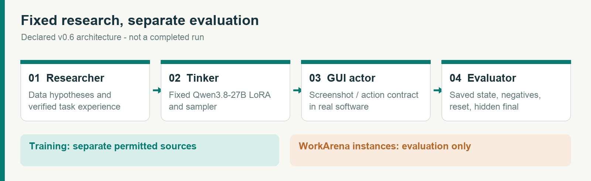
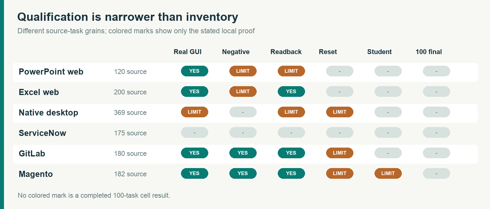
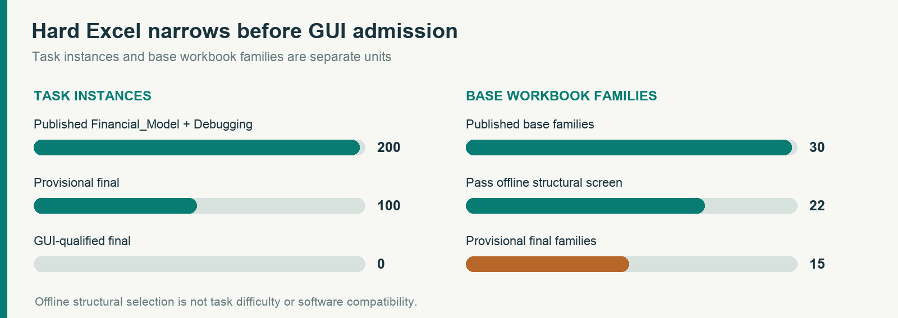
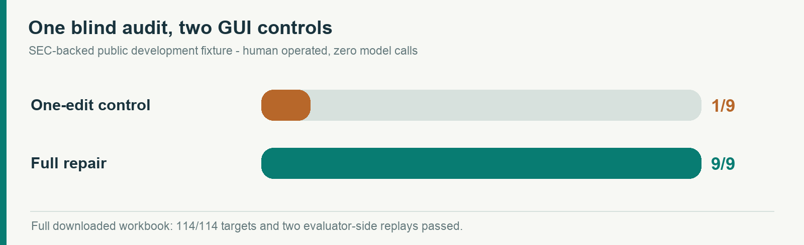
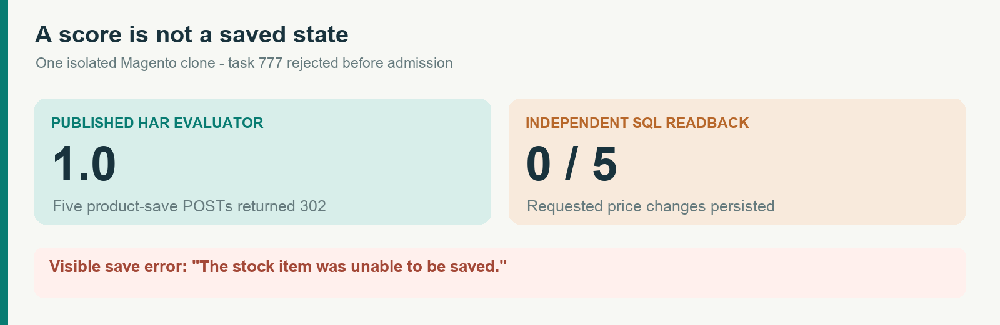

Real software.
Auditable claims.
A controlled computer-use data-research benchmark is taking shape across six applications. This publication shows which environments and verifiers have been tested in real software, and exactly where the full study remains open.
Read the English technical PDFResearch has one job. Evaluation has another.
Researchers choose training experience. The surrounding student, budget, GUI action contract, and independent saved-state evaluator remain fixed within each cell.

Choose a cell. Inspect its proof.
Upstream task counts have different grains. A source count is never treated as a scored denominator or a 100-task admission certificate.

Complex files do not become final tasks by counting them.
A family-disjoint offline split narrows 200 published instances to 100 provisional finals from 15 workbooks. The separate SEC development audit tests causal repairs in the actual Excel web editor.


The actor brief hid the nine fault locations, but the public development builder can reveal them. Official final tasks require private fault maps, source isolation, complete reset, and model-run evidence.
The network trace said yes. The database said no.
One Magento variant-price task received a published network score of 1.0 in an isolated clone, but the page showed a save error and none of five target prices changed. It was rejected before admission.

What this publication can support
Microsoft Excel and PowerPoint web, Magento, GitLab, and E2B Desktop each have a documented narrow probe. WorkArena instance access was requested and was pending review when this note was prepared. No full-scale researcher campaign has started; a later results report will require frozen task manifests, real checkpoint lineages, denominator and infrastructure accounting, official final outcomes, and actual provider costs.
Read the manuscript source · Inspect the public data and source hashes · Releases